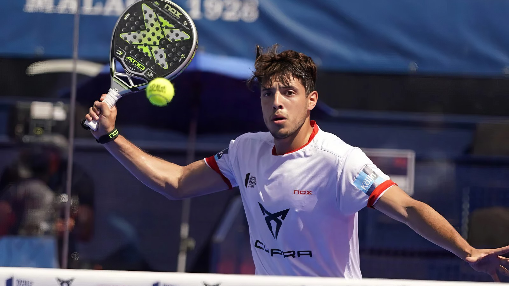
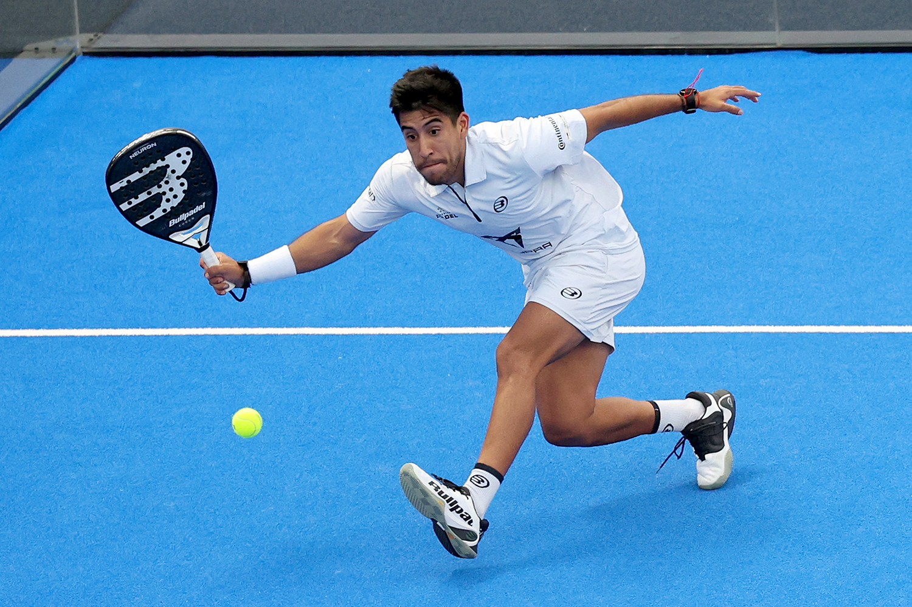

Miehet
Tällä sivulla pääset tutustumaan maailman top 4 parhaaseen mies padel pelaajaan.
Tällä sivulla pääset tutustumaan maailman top 4 parhaaseen mies padel pelaajaan.

26-vuotias Argentiinalainen padel pelaaja, joka on tällä hetkellä maailmanlistalla sijalla 1.
Tapia on voittanut useita kansainvälisiä turnauksia ja hänet tunnetaan nopeudestaan ja teknisistä taidoistaan kentällä.
Hänen pelityylinsä on aggressiivinen, ja hän on erityisen taitava verkolla, mikä tekee hänestä erittäin vaarallisen vastustajan.
Hän on yksi padelin kirkkaimmista tähdistä ja odotetaan hänen jatkavan menestystään tulevaisuudessa.
Agustin Tapia kilpailee Espanjalaisen Arturo Coellon kanssa

29-vuotias Espanjalainen padel pelaaja, joka on tällä hetkellä maailmanlistalla sijalla 3.
Galan on voittanut useita kansainvälisiä turnauksia ja hänet tunnetaan nopeudestaan ja teknisistä taidoistaan kentällä.
Hänen pelityylinsä on aggressiivinen, ja hän on erityisen taitava ylälyönneissä, mikä tekee hänestä erittäin vaarallisen vastustajan.
Ale Galan kilpailee Argentiinalaisen Federico Chingotto kanssa

23-vuotias Espanjalainen padel pelaaja, joka on tällä hetkellä maailmanlistalla sijalla 2.
Coello on voittanut useita kansainvälisiä turnauksia ja hänet tunnetaan teknisistä taidoistaan ja strategiastaan kentällä.
Hänen pelityylinsä on metodinen, ja hän on erityisen taitava pallojen hallinnassa, mikä tekee hänestä erittäin vaarallisen vastustajan.
Hän on yksi padelin kirkkaimmista tähdistä ja odotetaan hänen jatkavan menestystään tulevaisuudessa.
Arturo Coello kilpailee Argentiinalaisen Agustin Tapian kanssa

29-vuotias Argentiinalainen padel pelaaja, joka on tällä hetkellä maailmanlistalla sijalla 4.
Chingotto on voittanut useita kansainvälisiä turnauksia ja hänet tunnetaan nopeudestaan ja teknisistä taidoistaan kentällä.
Hänen pelityylinsä on aggressiivinen, ja hän on erityisen taitava verkolla, mikä tekee hänestä erittäin vaarallisen vastustajan.
Federico Chingotto kilpailee Espanjalaisen Ale Galan kanssa